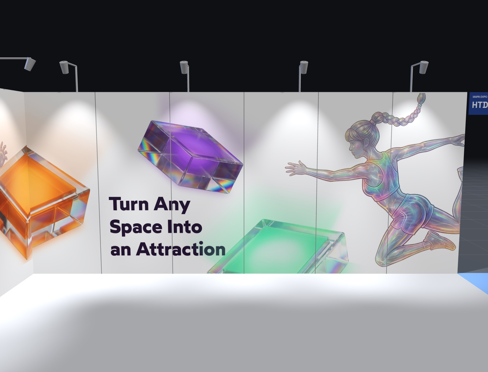
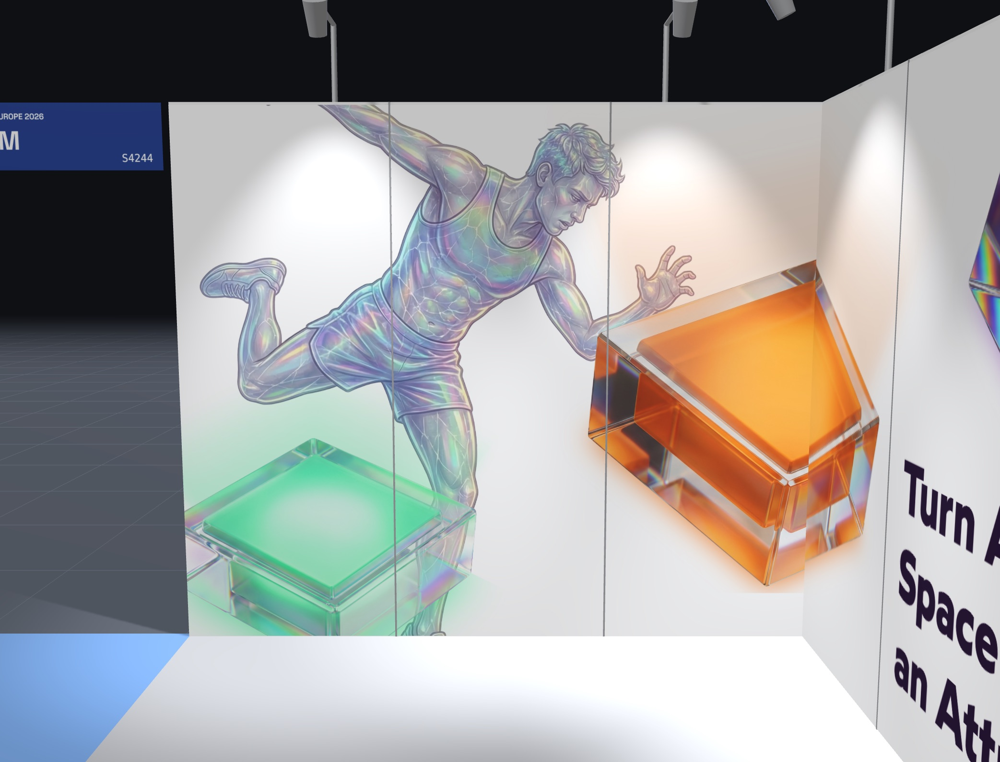

Chceme polepit dvě stěny výstavního stánku řezanou samolepicí fólií. Panely nám ale jen půjčuje pořadatel — proto potřebujeme hlavně vědět, jaká fólie z nich půjde po akci beze zbytku dolů.
Panely jsou z Foamexu (pěněné PVC) s hladkým povrchem. Nejsou naše — pořadatel si je po akci přebírá zpět a dal nám dvě podmínky: panely nepoškodit a po odlepení nenechat žádné reziduum lepidla. Odpovědnost nese naše firma.
Podmínky, ve kterých bude fólie pracovat:
Zajímá nás i váš odhad rizika: hrozí u pěněného PVC, že fólie po několika dnech pod světly přilne natolik, že při stahování vezme s sebou vrchní vrstvu panelu? A je v tom rozdíl mezi malými řezanými prvky a velkými plochami?
Děláte tohle prořezávání běžně? Pokud ano — jakou fólii na to a je bezpečnější nechat okraj v líci hrany, nebo zavinout? A dá se to zvládnout bez profesionálního aplikátora?
Bílé panely zůstávají bílé, je to součást designu — lepí se jen vybrané prvky: logotypy, texty, „kostky“ a postavy. Celoplošný polep panelu neplánujeme.

